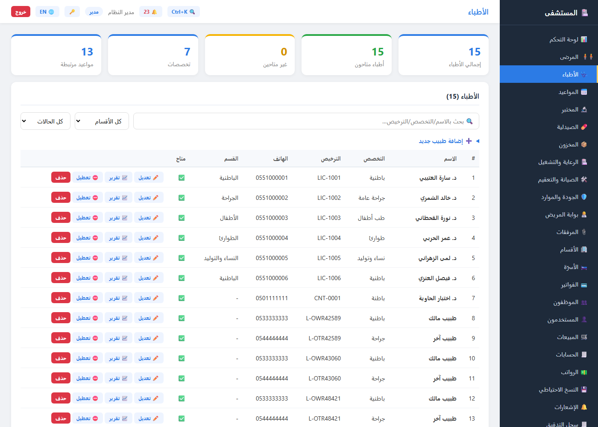
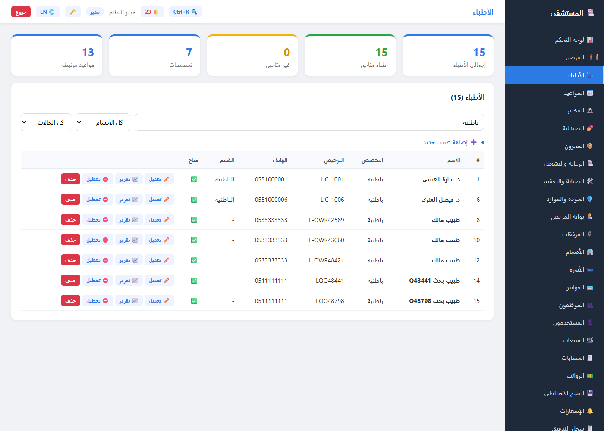
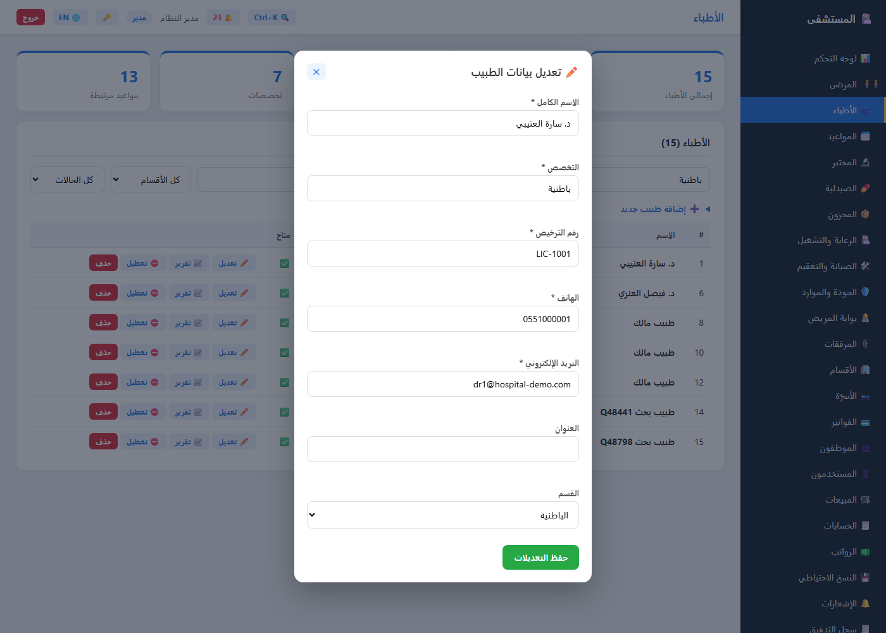
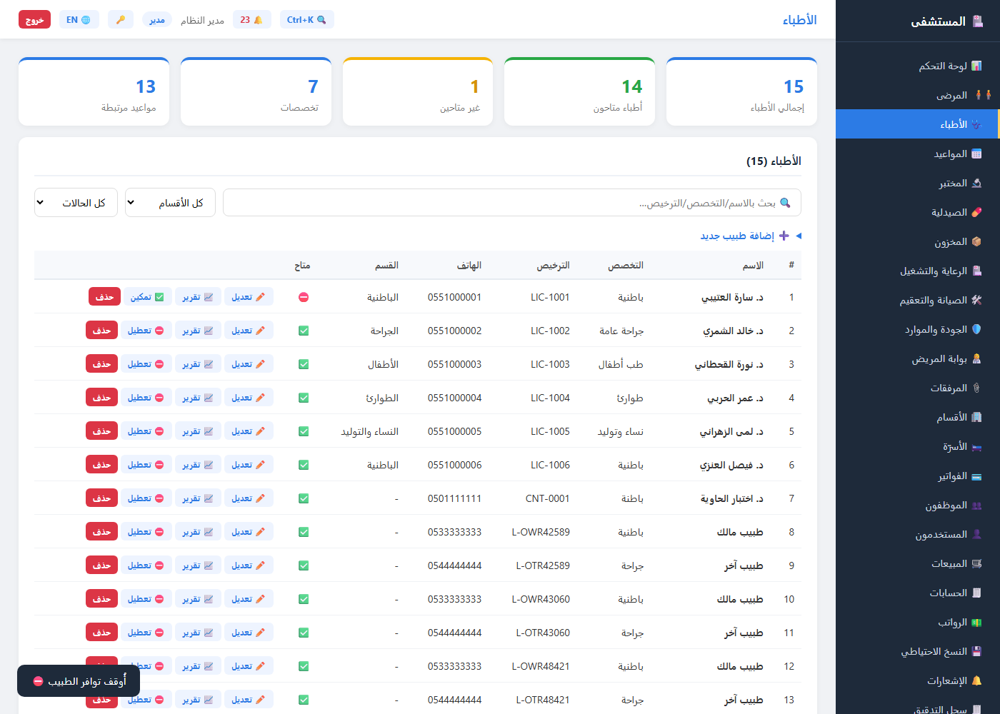
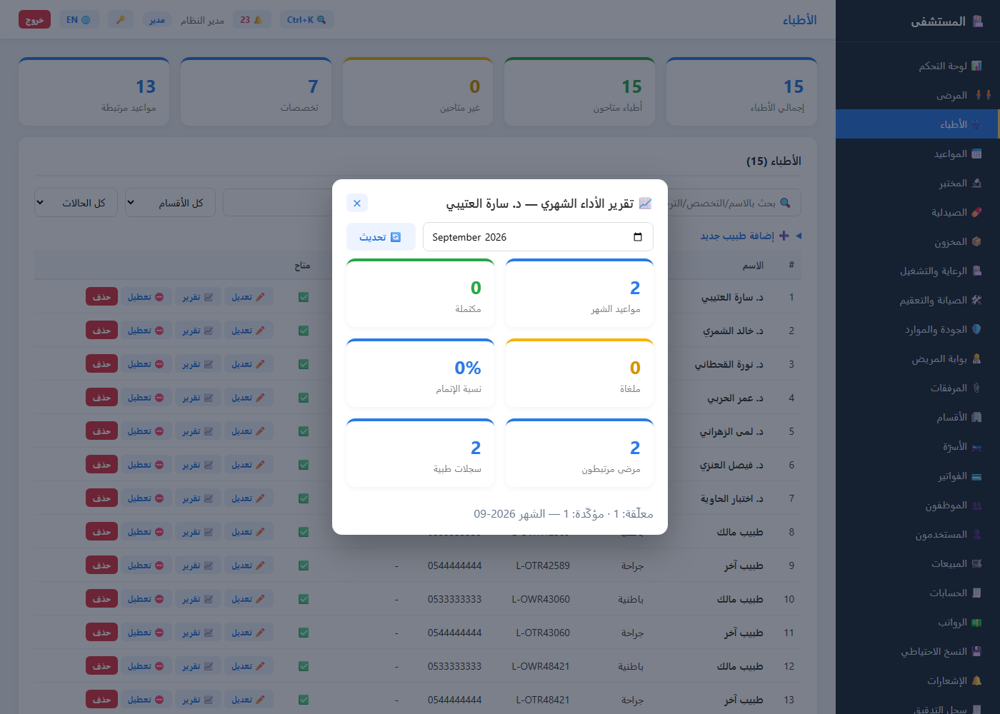

1 البداية: تسجيل الدخول 🔐
افتح /ui في نافذة خاصّة (Incognito) لترى شاشة الدخول مباشرة. صلاحيات القسم
صارمة: البحث والإحصاءات والتقرير متاحة لكل مستخدم مصادَق — أما الإنشاء
والتعديل والحذف فللمدير وحده 403، وبدون توكن 401 لكل النهايات.
| الدور | اسم المستخدم | كلمة المرور | قسم الأطباء |
|---|---|---|---|
| 👨💼 مدير | admin | admin123 | ✅ كامل (إنشاء/تعديل/حذف/توافر/تقارير) |
| 🩺 طبيب | drsara | sara12345 | 👁️ قراءة + تبديل توافره هو فقط |
| 🧑💼 موظف استقبال | reception1 | rec12345 | 👁️ قراءة فقط — الإنشاء 403 |

2 الإحصاءات والجدول 📊
GET /doctors/GET /doctors/statsواجهةالشريط الجانبي ← 🩺 الأطباء. أعلاه خمس بطاقات إحصاءات تقرأ
/doctors/stats لحظيًا: إجمالي الأطباء · متاحون · غير متاحين ·
عدد التخصصات · المواعيد المرتبطة. وفي اللقطة: 15 طبيبًا · 15 متاحون · 7 تخصصات ·
13 موعدًا مرتبطًا.
شريط الأدوات والجدول:
- 🔍 بحث فوري بالاسم أو التخصص أو رقم الترخيص + فلتر القسم (مع خيار «بدون قسم») + فلتر التوافر (متاح/غير متاح).
- لكل صف أربعة أزرار: ✏️ تعديل (مدير) · 📈 تقرير (الكل) · ⛔ تعطيل / ✅ تمكين (المدير أو الطبيب نفسه) · حذف (مدير).
- صندوق «➕ إضافة طبيب جديد» في الأعلى — لغير المدير لا يظهر أصلًا.

data-dept وdata-avail على كل صف —
أي الفلترة تجري في المتصفح فورًا دون أي طلب شبكة.3 🔍 البحث الفوري — بلا انتظار
واجهةGET /doctors/?q=اكتب في مربع البحث «باطنية» وسترى النتيجة في اللقطة: الجدول ضاقت إلى 7 صفوف فقط من أصل 15 — بلا إعادة تحميل وبلا نقر زر. الفلترة تجتمع معًا:
- q يطابق الاسم أو التخصص أو رقم الترخيص (مطابقة جزئية).
- فلتر القسم وفلتر التوافر فوقه — والثلاثة تتراكب (AND).
- وعلى الخادم نفسها:
?sort=nameللترتيب، وقيمة sort غير صالحة تُرفض 400 برسالة عربية بدل الترتيب الصامت.

department_id وavailable —
الواجهة تستخدم النسخة المحلية للسرعة، والـAPI يغطي الاستدعاء المباشر (Swagger/cURL).4 ✏️ تعديل كامل — سبعة حقول
PUT /doctors/{id}واجهةزر «✏️ تعديل» يفتح نافذة بحقول: الاسم الكامل · التخصص · رقم الترخيص ·
الهاتف · البريد الإلكتروني · العنوان · القسم — اللقطة تعرض بيانات
«د. سارة العتيبي» (ترخيص LIC-1001).
ما الذي تغيّر عن النسخة القديمة؟
- رقم الترخيص والعنوان كانا غائبَين عن نموذج التحديث — لا يُعدَّلان أصلًا مع بقية الحقول. الآن مكتملان.
- تكرار ترخيص أو بريد طبيب آخر كان IntegrityError 500 — صار 400 برسالة عربية تقول بالضبط ما الذي تكرّر.
- قسم غير موجود ⇒ 404 «القسم غير موجود» · غير مدير ⇒ 403.

PUT واحد — النافذة تُغلق بعد الحفظ ويُعاد رسم الجدول فورًا.5 ⛅ تبديل التوافر — صلاحية ذاتية
PUT /doctors/{id}/availabilityواجهةزر «⛔ تعطيل» في صف الطبيب يستدعي نهاية التوافر — وفي اللقطة بعد النقر: توست «أُوقف توافر الطبيب ⛔» أسفل اليسار، وصف «د. سارة العتيبي» صار ⛔ مع زر «✅ تمكين»، وبطاقات الإحصاءات حدّثت نفسها فورًا: 15 متاح ← 14 · غير المتاحين 0 ← 1.
قواعد الصلاحيات (محكّمة في الاختبارات):
- بلا توكن ⇒ 401.
- مدير ⇐ يغيّر توافر أي طبيب.
- طبيب ⇐ يغيّر توافره هو فقط (يطابق بريده) — يمين غيره 403 «لا تملك صلاحية تغيير توافر هذا الطبيب — للمدير أو الطبيب نفسه فقط».

filterDoctors() بعد كل تبديل (البحث يعود فارغًا
لأن الشريط يُعاد بناؤه مع الجدول).6 📈 تقرير الأداء الشهري — للجولة التقييمية
GET /doctors/{id}/performance?month=واجهةزر «📈 تقرير» في كل صف يفتح نافذة تقرير الأداء الشهري مع منتقي شهر
(<input type="month">) — افتراضه الشهر الحالي، ويمكن التغيير
والتحديث دون إغلاق النافذة. النتيجة ست بطاقات + سطر تفصيلي:
- 📅 مواعيد الشهر · ✅ مكتملة · ⛔ ملغاة.
- 🎯 نسبة الإتمام = مكتملة ÷ إجمالي الشهر (أصفار صريحة بلا مواعيد).
- 👥 مرضى مرتبطون (فريدون) · 📁 سجلات طبية أُنشئت في الشهر.
- والسطر الأخير: المعلّقة والمؤكّدة + الشهر المعتمد.
في اللقطة: د. سارة العتيبي — سبتمبر 2026: 2 موعد (معلّق + مؤكّد) · 2 مريض ·
سجلان · نسبة إتمام 0%. وتحقق الخادم صارم: month غير صالح الصيغة ⇒
400 «month يجب أن يكون بصيغة YYYY-MM»، ومعرف طبيب مفقود ⇒ 404، بلا توكن ⇒ 401.

[بداية الشهر، بداية الشهر التالي) — استعلام واحد لكل مصدر،
بلا حسابات في الذاكرة.🎓 انتهى؟ الخطوة التالية
- 📘 دليل المستخدم الكامل — كل الشاشات والأدوار (وPDF: user-guide.pdf).
- 🛡️ جولة صلابة النسخ الاحتياطي · 🎓 جولة الصيدلية والمختبر — الجولات السابقة (6 شاشات لكل منهما).
- 🧪 للفحص الآلي:
pytest(192 اختبارًا — منها 10 لقسم الأطباءtest_doctors_section.py) ·stack_check.py(86 فحصًا) ·live_container_test.py(132 فحصًا حيًّا داخل الحاوية) ·load_test.py(p95 ≤ 700ms) — والكل يجري على GitHub Actions عند كل دفع. - 🐙 المستودع: github.com/aymanhamid2020-dot/hospital-management-system.